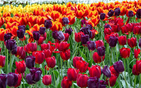
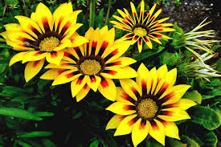
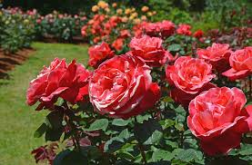

Dalia Negras: As dálias, com sua beleza exótica, simbolismo diverso e usos variados, são flores que transcendem o comum. Mais do que um presente elegante, as dálias representam a dignidade, a criatividade e a mudança, inspirando a humanidade com sua beleza e significado profundo.
Lotus: Esta pequena flor tem significado importante na cultura oriental, na qual é comumente associada ao Buda. A planta significa pureza do corpo e da mente, e renascimento. Isso porque, embora cresça na lama, ela se torna uma bela flor: o caminho para purificação em meio às impurezas mundanas.
Tulipas: As tulipas, com sua beleza radiante, simbolismo rico e usos diversos, são flores que transcendem o comum. Mais do que um presente encantador, as tulipas são um símbolo da primavera, da alegria e da esperança.
Gazania: Gazânias são flores tão, mas tão lindas que parecem pintadas a mão. Enchem de beleza nossos olhos e corações. Acredita-se que a Gazania representa o equilíbrio e a harmonia entre estas forças opostas - lembrando-nos de encontrar o equilíbrio nas nossas vidas.
Rosas: As rosas, com sua beleza incomparável, simbolismo rico e usos diversos, são flores que transcendem o tempo e o espaço. Mais do que um presente perfeito, as rosas são um símbolo da vida, do amor e da esperança.